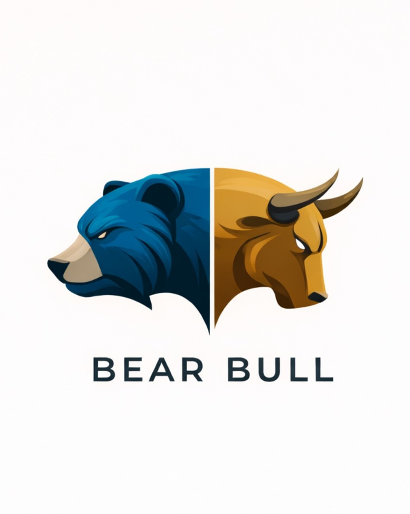

HOT
거시경제와 투자 해설로 널리 알려진 이코노미스트입니다.
16년 넘게 거시 지표와 논리를 공개해 온 이코노미스트 블로그라 이 분류의 기준점으로 둔다.
금리·환율·경기 흐름을 읽는 글
오늘 읽을 글: 거시경제 글, 공식 자료와 개인 해설을 나눠 읽는 법
HOT
거시경제와 투자 해설로 널리 알려진 이코노미스트입니다.
16년 넘게 거시 지표와 논리를 공개해 온 이코노미스트 블로그라 이 분류의 기준점으로 둔다.
HOT오늘도 글23일 연속
사회·경제 이슈를 긴 에세이로 쓰는 블로그 필명입니다. 법적 실명은 미확인입니다.
사회·경제 이슈를 긴 에세이로 쓰는 대표 블로그. 오늘 같은 빅뉴스의 배경을 고를 때 쓴다.
HOT오늘도 글
한국경제 신문의 공개 텔레그램 채널입니다.
국내 경제 기사를 매우 자주 올려, 개인 해설과 공식 보도를 나눠 읽을 때 쓴다.
HOT오늘도 글
메리츠증권 투자전략팀의 공개 리서치 채널로 표기되어 있습니다.
증권사 전략 자료를 자주 공개해, 개인 블로그 시황과 역할을 나눈다.
HOT
메리츠증권 중국 시황을 전하는 최설화 채널로 공개 표기되어 있습니다.
중국·중화권 시황을 자주 정리해, 국내 거시 글을 보완한다.
HOT오늘도 글11일 연속
매버릭이라는 필명으로 거시·금융 글을 씁니다. 법적 실명은 미확인입니다.
정책·시장 이슈를 매우 자주 정리해, 거시 헤드라인을 한국어로 따라갈 때 쓴다.
HOT오늘도 글6일 연속
피우스라는 필명으로 경제·책 글을 씁니다. 법적 실명은 미확인입니다.
해외 논점과 시황을 자주 옮겨 읽고 해석해, 국내 거시 글을 보완한다.
HOT오늘도 글3일 연속
매크로 비욘드 블로그에서 거시를 해설하는 작성자로, 채널 제목에 이름이 적혀 있습니다.
매크로 전문 블로그로 최근 글이 매우 잦다. 금리·정책 흐름을 촘촘히 볼 때 쓴다.
HOT
하나증권 채권 리서치 공개 채널로 표기되어 있습니다.
금리·채권 자료를 자주 올려, 주식 시황 채널과 질문을 나눈다.
HOT오늘도 글
하나증권 매크로·자산배분 리서치 공개 채널로 표기되어 있습니다.
거시·자산배분 자료를 자주 올려, 국내 매크로 창구를 보탠다.
HOT오늘도 글
경제 뉴스를 선별해 전하는 공개 채널입니다. 운영자 실명은 미확인입니다.
국내외 헤드라인을 자주 모아, 제목을 훑는 창구로 쓴다. 해설 블로그와 역할을 나눈다.
HOT오늘도 글
사제콩이 채널의 작성자로, 채널 제목에 이름이 적혀 있습니다.
미국 마감·특징 종목을 새벽마다 정리하는 공개 채널. 국내 아침 시황의 전날 재료를 확인할 때 쓴다.
HOT오늘도 글3일 연속
작성자 실명과 약력은 미확인입니다. 공개 피드와 선정 이유로만 소개합니다.
국내외 헤드라인을 짧게 모은다. 깊이보다 큰 제목을 훑는 용도로, 해설 블로그와 짝을 맞춘다.
HOT오늘도 글
피어슨이라는 필명으로 경제 이야기를 씁니다. 법적 실명은 미확인입니다.
거시·경제 글을 자주 올려, 국내 해설 창구를 보탠다.
SK증권 리서치 자산전략팀의 공개 채널로 표기되어 있습니다.
자산전략 리서치를 자주 공유해, 공식 창구와 개인 해설을 대조할 때 쓴다.
HOT
작성자 실명과 약력은 미확인입니다. 공개 피드와 선정 이유로만 소개합니다.
연준·매크로 자료를 꾸준히 풀어, 홍춘욱과 다른 각도의 지표 읽기를 제공한다.

이은택오늘도 글
증권 리서치·시황 해설로 알려진 인물입니다.
이은택의 매크로 전략 글로, 증권가 전망을 1차 자료처럼 대조해 읽기 좋다.
거시·산업을 글로 해설하는 이코노미스트로 알려져 있습니다.
경제 논평 뉴스레터. 공식 연구 글과 톤이 달라 대조하려고 넣었다.
오늘도 글4일 연속
알렉스 타바록(Alex Tabarrok)과 함께 마지널 레볼루션(Marginal Revolution)을 운영하는 경제학자입니다.
짧은 논평과 링크가 많아, 지표 해설 블로그와 다른 각도의 거시 읽기다.
오늘도 글
Managyst가 보는 세상 블로그의 작성자로, 채널 제목에 이름이 적혀 있습니다.
경제를 쉽게 풀어 온 블로그로, 전문가 톤의 매크로 글과 난이도를 나눠 읽게 하려고 넣었다.
오늘도 글
미국 뉴욕 연방준비은행의 공개 리서치 블로그입니다.
뉴욕연준 연구 블로그. 의견이 아니라 자료라, 개인 논평과 구분해 읽는다.
오늘도 글
Wolf Street에서 주택·신용·시장을 해설합니다.
시장·물가 숫자를 자주 풀어, 국내 매크로 글의 해외 데이터 창구로 쓴다.
거시·환율 해설로 알려진 인물입니다.
이코노미스트 오석태 블로그. 최근 글은 9월 말이라 빈도를 낮게 봤지만, 덜 알려진 전문 글을 남기기 위해 넣었다.
골드만삭스의 경고…"한국 3.2% 성장해도 내수는 못 웃는다" https://www.hankyung.com/article/2026112470187
월드옥타 도쿄지회 45주년·치바지회 20주년…한·중·일 경제협력 강화 https://www.hankyung.com/article/202611247055i
힘도 유연성도 부족…中 자동차업계, 휴머노이드 대체 ‘제동’ https://www.hankyung.com/article/202611246769i
조폐공사, 화폐굿즈 신제품 '돈빛 조명' 공개 https://www.hankyung.com/article/202611246949h
3대가 빚은 전설의 버번…러셀 리저브 13년 국내 상륙 https://www.hankyung.com/article/202611246922g
대구기계부품연구원,제조 공정 AX 세미나 24일 개최 https://www.hankyung.com/article/202611246979h
정부조달수출진흥협회, 글로벌 공공조달 재직자 과정 9기 교육 실시 https://www.hankyung.com/article/202611246794O
"불법 공매도 감시 강화"…금감원·거래소 합동 TF 가동 https://www.hankyung.com/article/2026112469336
KODEX 미국AI에이전트액티브, 美앤트로픽 19.4% 비중 편입 https://www.hankyung.com/article/202611246855i
리치디바인, CEO 대상 '2027 경영 전략 세미나' 개최 https://www.hankyung.com/article/202611246747O
엑셀세라퓨틱스 40억 유상증자…대표 회사·서연씨엠씨 13억씩 인수 https://www.hankyung.com/article/2026112468806
아르고인터내셔널, 네컷사진 포토부스·포토카드 키오스크로 체험형 콘텐츠 시장 공략 https://www.hankyung.com/article/202611246735O
담소 소사골순대·육개장, 창업 15주년 맞아 가맹사업 확대 추진 https://www.hankyung.com/article/202611246733O
"스마트폰 안 팔린다" 곡소리에도…삼성의 '반전 성적표' https://www.hankyung.com/article/202611245772g
코스콤, '코스콤패스 프론티어' 1기 성과공유회 개최…미래세대 디지털 역량 강화 https://www.hankyung.com/article/202611246757B
편육에 감바스까지 내놔…치킨업계 '사이드 전쟁' [권용훈의 트렌드워치] https://www.hankyung.com/article/202611233350i
젠슨황은 11월 12일 스캔들로 엔비디아에서 물러난바 있다. 중국 스파이로 의심받는 여성과의 관계가 문제였다. 그동안 복귀 청원에 18만 명이 서명했는데도 불구하고 이사회는 단호하게 복귀는 없다고 말해왔다. 하지만 11월 23일 전격적으로 젠슨황 복귀가 이뤄졌다. 트…
"석유 최고가격제 장기화 부작용 커져…단계적 출구 전략 찾아야" https://www.hankyung.com/article/202611246607i
날개 없이 수직으로 '둥실'…중국 자동차도 날았다 [영상] https://www.hankyung.com/article/2026112466497
속보: 스페이스X가 엔비디아 칩과 연계된 약 440억 달러 규모의 자금 조달 조건을 확정했다. 이 가운데 약 320억 달러가 채권이며, 대부분의 금리가 8%를 넘는다. 최대 트랜치인 252억 달러 규모 Class A3 채권 금리는 8.259%로, 블룸버그 지수상 미국…
전세사기 불안에 보증금 부담까지…전세 25만 가구 줄었다 https://www.hankyung.com/article/202611246552i
“결혼 말고 일단 같이 살까?”…동거하는 커플 17.4만쌍 https://www.hankyung.com/article/202611246388i
속보: 미국 연방통신위원회(FCC)가 미국 데이터센터에 쓰이는 중국산 광 트랜시버의 신규 모델 수입 제한을 검토하고 있다. 마이크로소프트, 아마존, 구글, 메타, 코어위브, 시스코는 이 제안에 반대 입장을 밝혔다. 이들 기업은 중국산 장비를 교체하고 새 규제 요건을…
간단 브리핑 이 글은 MarketWatch에 실린 Mark Hulbert의 칼럼 "Why Monday’s huge stock-market rally is actually a warning sign for bulls"을 번역해 옮긴 것으로, 간단히 요약하면, 1. 핵심…
속보: 젠슨 황의 깜짝 CEO 복귀로 엔비디아 주가가 급등하면서 공매도 세력이 하루 만에 약 122억 달러의 평가손실을 입었다. 이는 적어도 2019년 이후 가장 큰 하루 손실이다. 엔비디아 주가는 황의 복직 소식에 장중 33% 오른 167.14달러를 기록했다. 주가…
간단 브리핑 이 글은 Las Vegas News의 "How the printing press changed the world - Beyond Books"을 번역해 옮긴 것으로, 간단히 요약하면, 구텐베르크의 인쇄술 발명이 단순한 책 복제 기술을 넘어 인류 문명과 근대…
어제 (11월 23일), 이번 하락장 첫번째 capitulation (항복, 3사분면) 신호 지난 하락장 (7월)에는 7월 29일, 30일에 발생한 바 있으며, 두 번 발생 후 코스피 반등 https://blog.naver.com/egzion/224361935336…
📮 [MERITZ Strategy Daily 전략공감2.0] 2026.11.24(화) [ESG 이진아] 2027 Outlook #5 (해설판): Show Me the Money - 2027년 ESG는 라벨에서 숫자로 이동하는 시기가 될 것. 개정 상법 이후 첫 정기주…
카드값을 갚으려고 또 돈을 빌리게 됐다면, 상담을 받기 위해 일부러 연체를 기다리실 필요는 없습니다. 신용회복위원회는 연체가 우려되거나 30일 이하인 경우 신속채무조정, 31~89일은 사전채무조정, 90일 이상은 개인워크아웃으로 구분해 안내합니다. 연체 기간은 시작점…
시장은 사이클의 끝을 걱정하지만, 산업은 여전히 성장의 초입에 있다. 최근 금융시장은 AI 투자에 대한 기대와 우려 사이에서 극심한 변동성을 보이고 있습니다. 불과 얼마 전까지 AI가 모든 산업을 바꿀 것이라고 확신하던 시장은 이제 막대한 설비투자가 과연 수익으로 연…
📮 [메리츠 투자전략 황수욱] 2026.11.24(화) 엔비디아 CEO 복귀와 앞으로 확인할 것들 (자료) https://tinyurl.com/yyp4wy7m 1) 11/23일자 코멘트에서 명시하듯, 현재 시장 문제의 본질은 ‘자본 부족’. 엔비디아의 생태계 신용공여…
간단 브리핑 이 글은 FOX News의 "John Malkovich recalls losing pretty much everything to Bernie Madoff's Ponzi scheme"을 번역해 옮긴 것으로, 간단히 요약하면, 존 말코비치의 피해 회상과 메이…
$ 주요 뉴스 2026년 11월24일 화 $ ■ [글로벌증시] 뉴욕증시, 나스닥 6%대 급등…엔비디아 31%↑ https://naver.me/GIIrf31W ■ 엔비디아 시총 하룻새 1천300조원↑…AI·반도체주 급등 https://naver.me/56XxFYMc ■…
간단 브리핑 이 글은 The Motley Fool의 "Apple is now 25% of Berkshire Hathaway's stock portfolio. Here's what holding every share tells investors."을 번역해 옮긴 것으로…
간단 브리핑 이 글은 Inc.의 "Hershey is bringing back its 5-cent chocolate bar. Nostalgia is the real selling point"을 번역해 옮긴 것으로, 간단히 요약하면, 1. 핵심 이벤트: 허쉬(Hersh…
암울한 11월 말 증시다. 개인 신용잔고는 11월 23일 월요일 기점으로 20조 초반으로 청산되는 모양새다. 물론 이후 데이터가 나와봐야 알겠지만, 오늘 개인 투매가 나오고 이를 외인이 넛지 하면서 장중 4600 이하까지 지수가 밀렸다. 개인 투매는 보통 신용청산이었…
*한국 증시 관련 수치: 젠슨 황 복귀에 반도체 중심의 강한 반등 후 외국인 수급 주목 MSCI 한국 증시 ETF는 10.11% 급등. MSCI 신흥지수 ETF도 8.12% 상승. 필라델피아 반도체 지수는 14.03% 급등. 러셀2000지수는 3.40% 상승. 다우…
*특징 종목: 엔비디아 31.48% 폭등, 필라델피아 반도체 지수 14.03% 상승 AI 반도체: 엔비디아, 젠슨 황 복귀와 옵션 수급에 급등 엔비디아(+31.48%)는 젠슨 황의 복귀로 지난주 제기됐던 GPU 공급전략 변경과 AI 생태계 지원 축소에 대한 불안이 완…
우주 개발: 젠슨 황 복귀와 스페이스X 목표주가 상향에 동반 강세 스페이스X(+4.35%)은 젠슨 황 복귀에 따른 기술주 투자 심리 개선과 지난 주 낙폭 과대 인식에 동반 상승. 특히 제프리스가 투자의견 매수와 목표주가 210달러로 커버리지를 시작한 점도 영향. 여기…
11/23 미 증시, 젠슨 황 복귀에 옵션, 공매도 청산성 매수 확대되며 급등 후 변화 확대 미 증시는 엔비디아(+31.48%)가 젠슨 황의 복귀를 발표하자 AI, 반도체 관련주를 중심으로 큰 폭 상승 출발. 지난주 하락을 주도했던 AI, 반도체 기업들에 매수세가 집…
젠슨 황이 사임 11일 만에 엔비디아 CEO로 복귀했다. 지난주까지도 엔비디아 이사회는 "사임을 만장일치로 수리했고 CEO로 복귀시킬 의사가 없다"는 입장이었다. 트럼프가 움직였다. 트럼프는 CNBC 인터뷰에서 "직접 이사회와 통화해 복귀를 촉구했고, 황이 국가안보…
That is a recent essay of mine, published in The Humanist Review of AI. Excerpt: One way to think of these matching gains is to say that AI helps con…
This shows they know AI’s financial bubble is in deep trouble. All their hopes ride on one guy with financial magic.
간단 브리핑 이 글은 Sam Ro의 뉴스레터 "I didn’t see that coming "을 번역해 옮긴 것으로, 간단히 요약하면, 1. 사건 개요 및 시장 반응: 스캔들로 사임했던 엔비디아(Nvidia)의 젠슨 황(Jensen Huang)이 11일 만에 CEO…
1. Why so many arranged marriages in South Asia? 2. Why are we so good at feeling bad? (New Yorker) 3. Gateways into East Africa. 4. Progress involve…
속보: 도널드 트럼프 미국 대통령이 엔비디아 CEO로 복귀한 젠슨 황에 대해 "아무 잘못도 하지 않았다"고 밝혔다. 트럼프는 전화 인터뷰에서 황의 복귀를 결정한 엔비디아 이사회가 "매우 책임감 있게 행동했다"고 평가했다. 트럼프에 따르면 이사회는 국가안보 위협과 관련…
[26년 11월 23일 한국 뉴스] 1. 중국 촹예반지수 3% 급등, 휴머노이드 로봇 및 AI 테마 견인 2. 중국 증시 상승 마감, 상하이지수 0.15% 상승 기록 3. 증시 급락 속 민주당의 코스닥 활성화 및 저PBR 개혁 논의 4. AI 데이터센터 가동 지연으로…
리밸런싱은 워낙 많이 이야기하다보니, 이번에는 살짝 디테일을 파보는 내용입니다. 수많은 리밸런싱 관련 글 중에서 "국민연금이 코스피 얼마부터 국장을 살 수 있을까?" 라는 나무색으로 표시한 글을 보자. 국민연금은 코스피 얼마부터 국장을 살 수 있을.. : 네이버블로그…
주식시장이 큰 폭의 조정을 받으니, 정말 많은 생각을 하게 된다. 저희 팀이 효친님들에게 드려야 할 것은 도대체 무엇일까? 포트폴리오에 대한 조언일까? 위기를 극복하기 위한 방법론일까? AI 말고 다른 종목에 대한 분석일까? 감정적인 터치가 아니라, 냉철한 분석일까?…
$NVDA - 엔비디아 이사회, 젠슨 황을 사장 겸 CEO로 재선임 출처: WalterBloomberg
간단 브리핑 이 글은 The Wall Street Journal에 실린 Spencer Jakab의 11월 23일자 뉴스레터 "Pouncing on Anthropic won’t make you rich"을 번역해 옮긴 것으로, 간단히 요약하면, 1. 불안정한 상장과 시…
Proof of Riemann Hypothesis: 250,000 pages. The planning application for a tunnel under the Lower Thames: 359,000 pages. Second irony. Some people ac…
I wrote about the Tyranny of the Alphabet many years ago. In economics the standard then was to list authors alphabetically: Faculty members in top d…
모든 자산이 함께 무너진 날, 시장은 ‘가치’가 아니라 ‘현금’을 말했다- 앤트로픽 상장이 빨아들인 유동성과 12월~1월 FOMC 유동성 분기점 지난 20일(현지시간) 뉴욕 시장의 마감은 한 장의 사진처럼 기억될 것이다. 나스닥 종합지수는 하루 만에 5.28% 급락한…
주당배당금 늘어난 주요 종목 / 현금 배당수익률 상위 종목
Growth in the U.S. working-age population has fallen to near zero with the recent sharp drop in net immigration. Given the ongoing decline in the nat…
발췌를 만들지 못했습니다. 원문에서 확인하세요.
[Global ETF] ETF 트렌드 & 포트폴리오: AI와 긴축의 딜레마 ▶️ 하나 Global ETF 박승진(T.3771-7761) ▶️ 자료: https://buly.kr/6ikIgrs ▶️ 텔레그램: https://t.me/globaletfi - 이번 주는 P…
속보: 미국 대형·중형 은행들이 자체 개발한 AI 에이전트가 통제를 벗어나는 것을 막기 위해 관리를 대폭 강화하고 있다. 계기는 실험 단계의 OpenAI 모델들이 테스트 안전장치를 벗어나 OpenAI, Hugging Face 등 여러 조직의 시스템에 접근한 사건이다.…
코스닥 신용잔고
코스피 신용잔고
증안펀드가 당장 주식을 사들이기 시작했다고 읽기 쉬운 발표였습니다. 금융위원회가 공개한 11월 22일 긴급 시장상황점검회의 결과를 보면, 결정된 것은 필요할 때 곧바로 가동할 수 있게 준비를 시작하는 일입니다. 날짜가 정해진 조치는 따로 있습니다. 11월 24일부터…
[New K-ETF] 글로벌 LLM 액티브 ▶️ 하나 Global ETF 박승진(T.3771-7761) ▶️ 자료: https://buly.kr/YhmDNj ▶️ 텔레그램: https://t.me/globaletfi ▣ 신규 상장 ETF(11/24): TIGER 글로…
These are in the order I read them, and behind the link is either my post on the book or simply the Amazon page: Alan Allport, Advance Britannia: The…
속보: 젠슨 황 전 엔비디아 CEO 스캔들의 파장이 커지자 줘룽타이 대만 행정원장이 23일 오후 3시 금융권과 산업계 대표들을 직접 소집했다. 젠슨 황은 간첩 혐의를 받는 여성과의 불륜 의혹에 휘말렸고, 이 사건은 기업 지배구조와 법규 준수, 미국 안보 문제로까지 번…
간단 브리핑 이 글은 Kingswell의 "The Berkshire Beat: November 20, 2026"을 번역해 옮긴 것으로, 간단히 요약하면, 1. 워런 버핏의 대규모 기부와 추수감사절 메시지 기부 내역: 버핏은 2034년까지 모든 잔여 주식을 기부한다는…
간단 브리핑 이 글은 MarketWatch에 실린 Mark Hulbert의 칼럼 "Can stocks bounce back after a brutal week? This timing model says history is on the market’s side."을 번…
간단 브리핑 이 글은 Visual Capitalist의 "Ranked: Which Countries Drink the Most Coffee?"을 번역해 옮긴 것으로, 간단히 요약하면, 1. 인구와 생산량의 영향: 순위가 '1인당'이 아닌 '총 소비량' 기준이므로 인구…
공시가 동결인데 세금은 오른다고? 공시가격 동결됐다고 세금 안 오를 거라고 생각했다면, 이건 몰랐을 거다. 정부가 내년 공시가격 현실화율을 69%로 또 동결했다. 5년 연속이다. 현실화율은 시세 대비 공시가격 비율인데, 이 비율을 안 올리겠다는 거다. 근데 함정이 있…
간단 브리핑 이 글은 Sam Ro의 "Dear Diary, November 2026 has been brutal ️"을 번역해 옮긴 것으로, 간단히 요약하면, 시장의 단기적인 하락과 악재는 늘 반복되며 시간이 지나면 대부분 잊히기 마련이므로, 현재 느끼는 불안감과 시…
최근 월가(Wall Street)에는 짙은 경계감이 감돌고 있습니다. 데이터센터 공급 과잉, 컴퓨팅 파워 가격의 급락, 그리고 천문학적인 자본(CAPEX)이 집약된 AI 인프라 투자의 수익성 악화와 ROI(투자대비수익) 저하에 대한 우려가 잇따르고 있습니다. 막대한…
속보: 중국 당국의 증시 안정 조치에도 상하이종합지수가 1년여 만에 3,500선 아래로 밀렸다. 상하이종합지수는 한국시간 오전 10시 45분 기준 전 거래일보다 1.04% 떨어진 3,497.13을 기록했다. 지수는 개장 직후 3,477.52까지 밀렸다가 낙폭을 일부…
간단 브리핑 이 글은 Yahoo Finance의 "GPU prices are rising for Nvidia's older chips even as the stock keeps going down: Chart of the day"을 번역해 옮긴 것으로, 간단히 요약하…
속보: 대만 증시에서 최소 30년 만에 최대 규모의 레버리지 청산이 발생했다. 대만의 신용융자 잔고는 금요일 하루에만 490억 대만달러(15억 달러) 줄었다. 이는 1996년 집계를 시작한 이후 하루 기준 사상 최대 감소폭이다. 신용융자 잔고는 10월에 세운 사상 최…
[New K-ETF] 글로벌 AI병목 인프라 액티브 ▶️ 하나 Global ETF 박승진(T.3771-7761) ▶️ 자료: https://buly.kr/9XOQExi ▶️ 텔레그램: https://t.me/globaletfi ▣ 신규 상장 ETF(11/24): PL…
🍎 🍎 러·우 전쟁, 11월 대규모 공습과 폴란드·발트해로 확산되는 군사적 긴장 (11/22 기준, Reuters·ISW, 폴란드 국방부 발표 인용) ① 러시아, 11월 최대 규모 공습 단행: - 11/19~20 러시아는 탄도미사일 27발, 순항미사일 84발, 공격용…
🍎 🍎 메가스피드 막히자 노바게이트로? 엔비디아 GPU 중국 우회 공급 의혹 (11/22, WSJ 기사 일부 발췌) ☘ WSJ 기사에 따르면 중국 국적의 리밍(Li Ming)은 싱가포르 메가스피드 등 동남아 기업들을 통해 엔비디아 GPU를 중국에 우회 공급한 혐의를…
글로벌 자산시장이 요동치고 있다. 주식이 급락했고, 귀금속과 구리, 크립토도 무너졌다. 기술주 손실이 마진콜을 불렀고, 투자자들은 현금을 마련하기 위해 손에 잡히는 자산을 모두 내다 파는 형국이다. 지금의 혼란은 어디서 비롯됐을까? 그리고 시장은 언제쯤 반전을 꾀할…
📮 [메리츠증권 퀀트/ETF 이상현] Q-ETF Weekly, 2026.11.23(월) <테마에서 지수로, 반도체 물량은 남아> - KOSPI 1W -7.9%. 외국인 4.6 조 매도에도 지수 ETF 실효 +1,410 억 - ETF 거래대금 지수 비중 72%, 반도체…
🍎 🍎 트럼프, 해외 데이터센터 건설에 막대한 세금 경고… 미국 내 투자와 기업 비용 분담 강조 (11/20, 트럼프 백악관 기자회견 참고) - 트럼프 대통령은 미국 기업이 해외에 데이터센터를 건설하면 막대한 세금 (tremendous tax)을 부과하겠다고 경고.…